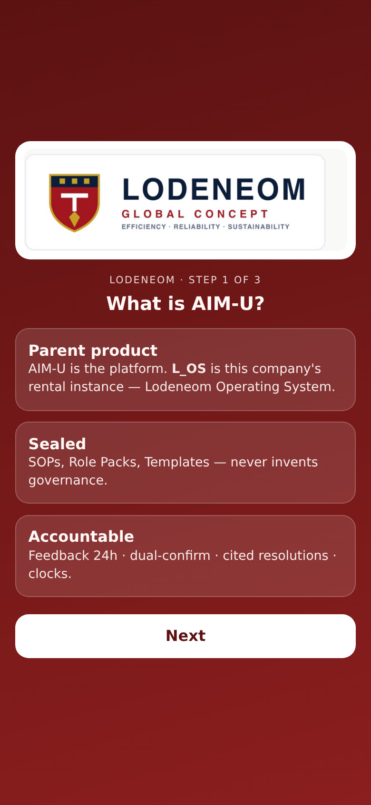
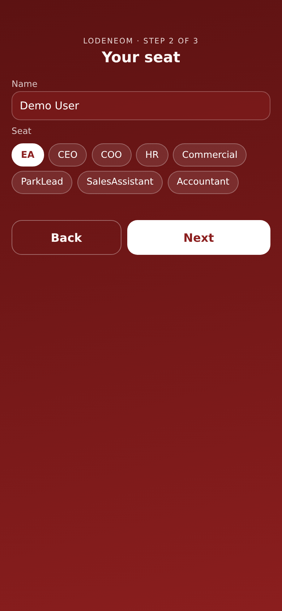
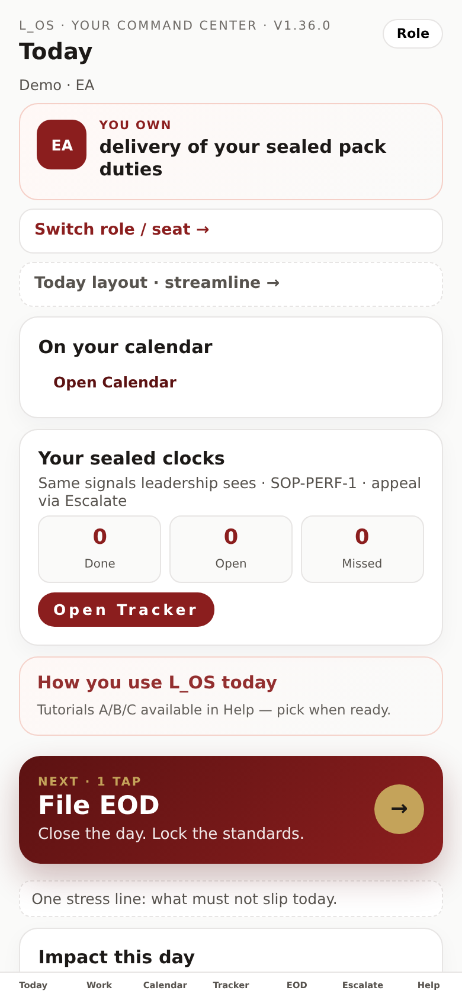
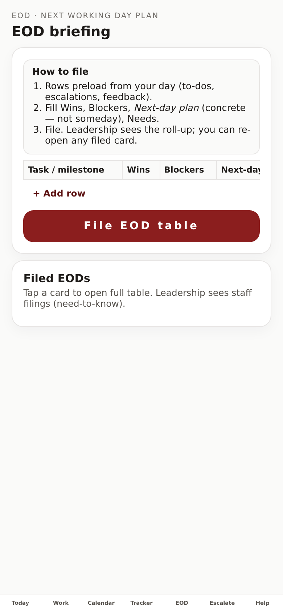
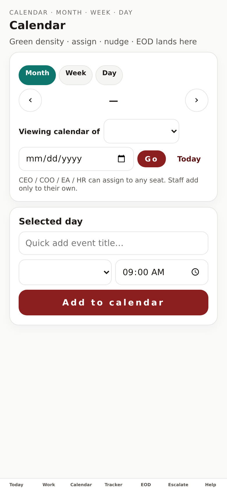
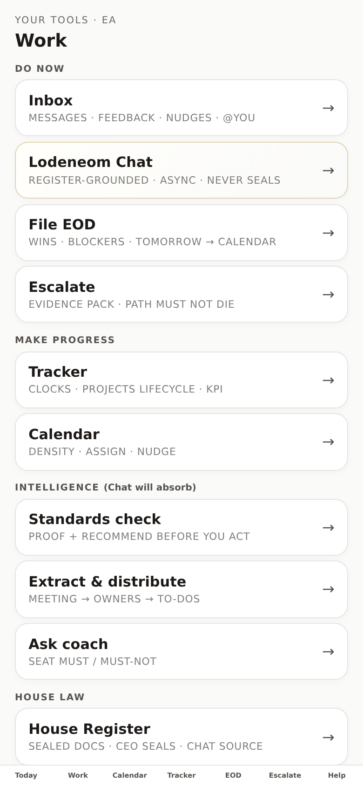
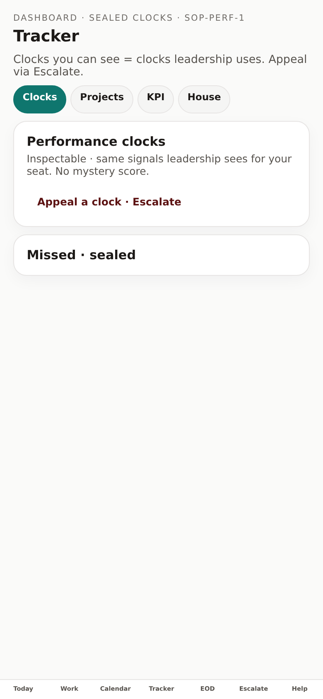
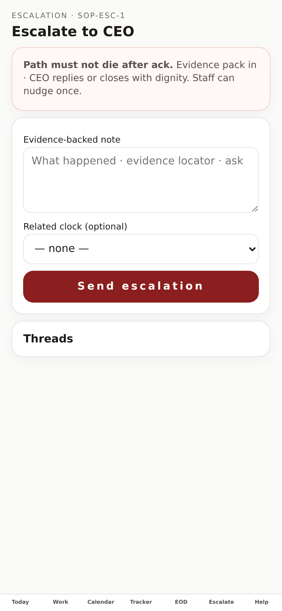
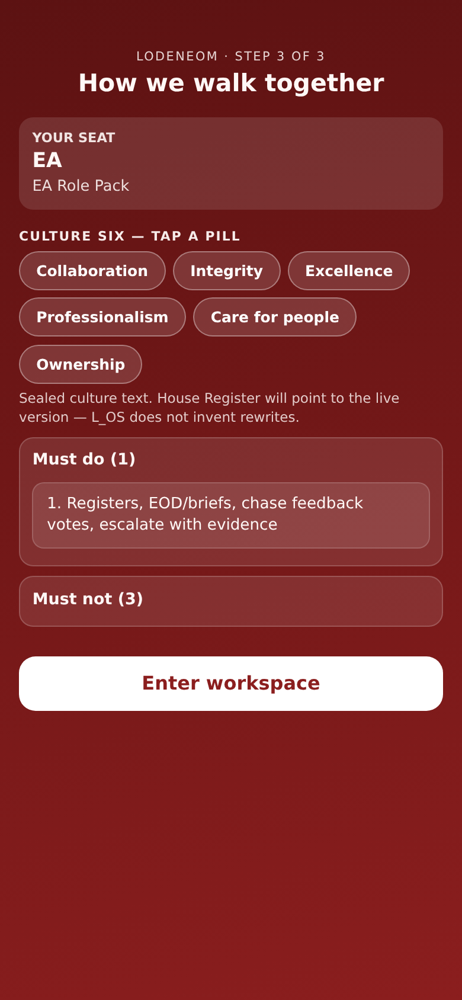
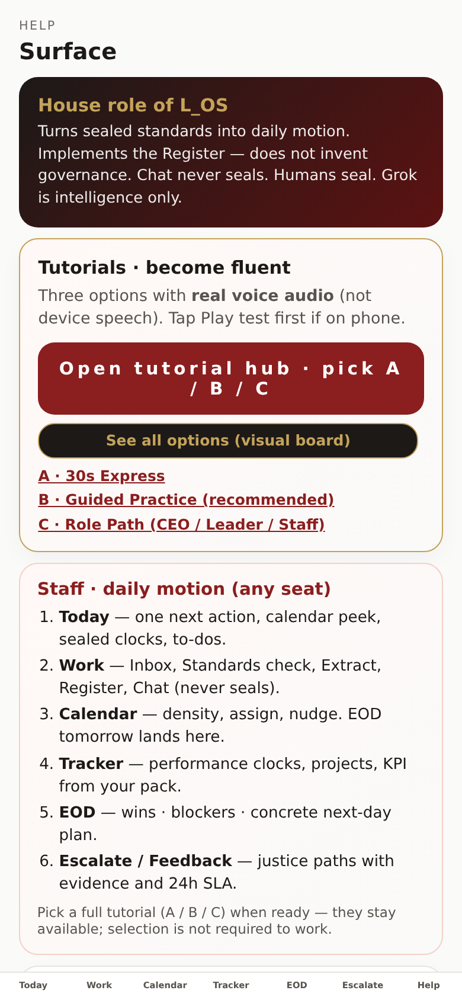

L_OS · Learn the house
Follow the screens. Same paths as A / B / C — step by step with current site pictures. No audio or video required.
← Host on GitHub first (if not live yet)
Splash → Step 1 (what L_OS is) → pick seat → Enter workspace.


Read the burgundy NEXT · 1 TAP card. That is your stress line for the day. Tap it when you know where it lives.

On Today: + Add to-do. Title + due. Staff add only to their calendar; leaders can assign later from Calendar.
Footer → EOD → fill Wins / Blockers / Next-day plan (concrete) → File. Tomorrow lands on next working day calendar.

Footer → Calendar. Confirm the tomorrow line is on the next working day.

Footer → Work → Inbox. Compose is for seat messages and groups. Feedback 24h lives here too.

Leaders (CEO/COO/EA/HR): assign to another seat → they get a nudge in Inbox. Staff: add only to own calendar.
Footer → Tracker. Same clocks leadership sees. Appeal via Escalate if a clock is wrong.

Path must not die after ack. CEO replies or closes with dignity.

Same as Path A step 4 — close every working day with a concrete tomorrow plan.
Onboarding Step 2 + walkthrough: must / must-not for your Role Pack. Re-read Help anytime.


CEO/COO: use seat switch to inspect density for other seats. Staff stay on their assigned seat in live house mode.
Feedback 24h SLA · Escalate evidence · Tracker appeals. Chat recommends; people seal. Grok never invents governance.
Footer tab appears for CEO: digest signals, deliveries, enquiries — investment state without ops gossip.
When GitHub host is live, open this same guide from Help on the phone for offline-friendly picture steps (page may still need network until Phase-2 offline).